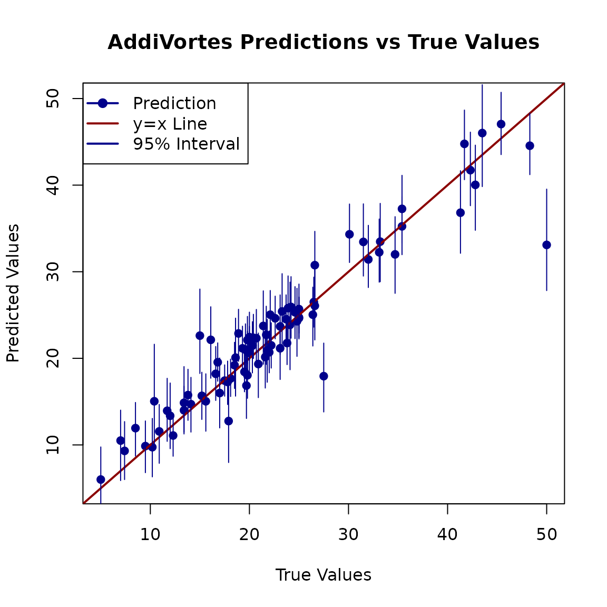

Introduction to AddiVortes
John Paul Gosling and Adam Stone
2025-07-15
Source:vignettes/introduction.Rmd
introduction.RmdThis vignette provides a basic example of how to use the
AddiVortes package to model data. We will walk through
loading data, training a model and making predictions on a test set.
1. Loading the Package and Data
First, we load the AddiVortes package. For this example,
we will use the well-known Boston Housing dataset.
# Load the package
require(AddiVortes)
# Load the Boston Housing dataset from a URL
Boston <- read.csv(paste0("https://raw.githubusercontent.com/anonymous2738/",
"AddiVortesAlgorithm/DataSets/BostonHousing_Data.csv"))
# Separate predictors (X) and the response variable (Y)
X_Boston <- as.matrix(Boston[, 2:14])
Y_Boston <- as.numeric(as.matrix(Boston[, 15]))
# Clean up the environment
rm(Boston)2. Preparing the Data
To evaluate the model’s performance, we need to split the data into a training set and a testing set. We will use a standard 5/6 split for training and 1/6 for testing.
n <- length(Y_Boston)
# Set a seed for reproducibility
set.seed(1025)
# Create a training set containing 5/6 of the data
TrainSet <- sort(sample.int(n, 5 * n / 6))
# The remaining data will be our test set
TestSet <- setdiff(1:n, TrainSet)3. Training the Model
Now we can run the main AddiVortes function on our
training data. We will specify several parameters for the algorithm,
such as the number of iterations and trees.
# Run the AddiVortes algorithm on the training data
results <- AddiVortes(y = Y_Boston[TrainSet],
x = X_Boston[TrainSet, ],
m = 200,
totalMCMCIter = 2000,
mcmcBurnIn = 200,
nu = 6,
q = 0.85,
k = 3,
sd = 0.8,
omega = 3,
lambdaRate = 25,
IntialSigma = "Linear"
)4. Making Predictions and Evaluating Performance
With a trained model object, we can now make predictions on our unseen test data. We will then calculate the Root Mean Squared Error (RMSE) to see how well the model performed.
# Generate predictions on the test set
preds <- predict(
results,
X_Boston[TestSet, ]
)
# The 8th element of the results object might contain useful info, like variable importance
# For this example, we just display it
cat("In-Sample RMSE:", results$inSampleRmse, "\n")
#> In-Sample RMSE: 1.182148
# Calculate the Root Mean Squared Error (RMSE)
rmse <- sqrt(mean((Y_Boston[TestSet] - preds)^2))
cat("Test Set RMSE:", rmse, "\n")
#> Test Set RMSE: 3.2066745. Visualising the Results
Finally, a good way to assess the model is to plot the predicted values against the true values. For a perfect model, all points would lie on the equality line (y = x). We will also plot the prediction intervals to visualise the model’s uncertainty.
# Plot true values vs. predicted values
plot(Y_Boston[TestSet],
preds,
xlab = "True Values",
ylab = "Predicted Values",
main = "AddiVortes Predictions vs True Values",
xlim = range(c(Y_Boston[TestSet], preds)),
ylim = range(c(Y_Boston[TestSet], preds)),
pch = 19, col = "darkblue"
)
# Add the line of equality (y = x) for reference
abline(a = 0, b = 1, col = "darkred", lwd = 2)
# Get quantile predictions to create error bars/intervals
preds_quantile <- predict(
results,
X_Boston[TestSet, ],
"quantile"
)
# Add error segments for each prediction
for (i in 1:nrow(preds_quantile)) {
segments(Y_Boston[TestSet][i], preds_quantile[i, 1],
Y_Boston[TestSet][i], preds_quantile[i, 2],
col = "darkblue", lwd = 1
)
}
legend("topleft", legend=c("Prediction", "y=x Line", "95% Interval"),
col=c("darkblue", "darkred", "darkblue"),
lty=1, pch=c(19, NA, NA), lwd=2)